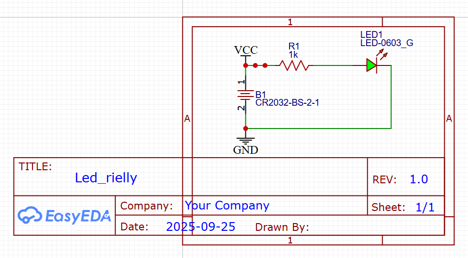

Back to my index
t1a07 easy EDA rielly
Use this link easy EDA tutorial Video
PCB's are circut board built to mount and orginize components so they work together and create a ultimate goal.
I designed this PCB with a LED, Battery, and Resistor.

This is the deisgn website I used to make my schematic and 3D modle of my PCB.

This is my schematic of my PCB.